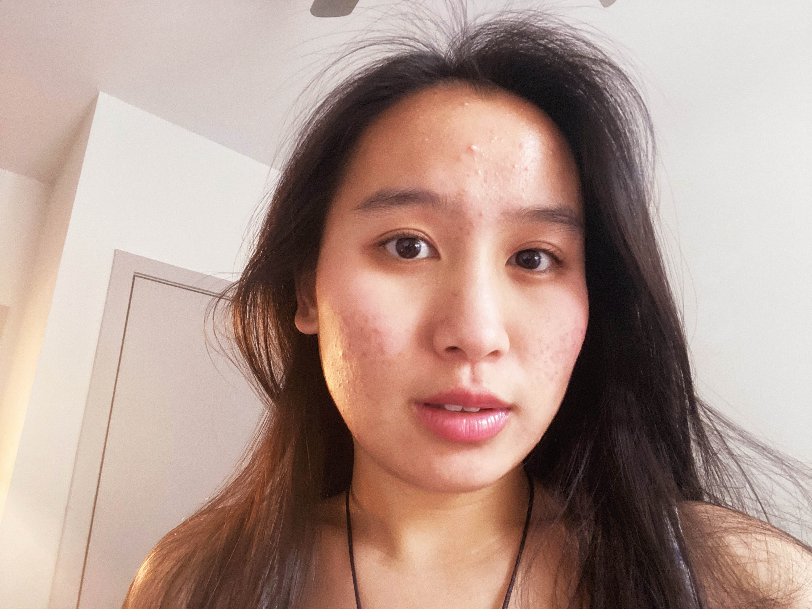

Computer Science Undergraduate | Java, Python, Web Development
Motivated Computer Science undergraduate experienced with Java, Python, and web development. Strong problem-solving ability, fast leaner, and effective collaborator. Seeking a Software Engineer internship to apply programming skills in real-world development environments.
Skills
- Java, Python, Javascript
- HTML5/CSS3, responsive web development
- Object-oriented programming (OOP)
- Debugging & troubleshooting
- Git & GitHub version control
- Leadership & team collaboration
Education
Bachelor of Science in Computer Science
Virginia Commonwealth University, Richmond VA | GPA: 3.0
- Awarded merit-based scholarship for outstanding academic performance.
- Awarded volunteer-based scholarship from First Generation Student Organization.
Experience
Programming Instructor @ CodeWizardsHQ
June 2024 - July 2025
- Developed interactive browser-based games using JavaScript, HTML, and CSS, teaching middle-school students core programming concepts, resulting in consistently high student engagement.
- Delivered structures lessons in Python and Java by breaking down complex ideas into accessible steps, improving student comprehension and project completion rates.
- Earned monthly Outstanding Instructor feedback by maintaining strong organization, clear communication, and student-centered teaching practices.
Projects
K-Pop Fan Website
June 2025 - Present
- Designed and deployed a responsive multi-page site using semantic HTML5, CSS, Flexbox, and mobile-first layouts, improving load time and readability across devices.
- Integrated artist bios, discographies, and galleries by structuring reusable components and clean file organization, simplifying future feature updates.
Coursework
- Data Structures
- Algorithms
- Computer Systems
- Discrete Structures
- Computing & Data Ethics
- Intro to Programming
- Software Design Concepts
Clubs & Leadership
Robotics Team - Captain & Member
Sep 2019 - Jun 2023
- Led a team of builders and programmers through the VEX V5 program, coordinating design and testing of competition robots.
- Engineered mechanisms to launch discs and blocks and stabilize on seesaws using iterative prototyping, advancing team performance to state-level competition in 2022.
Emerging Leadership Program
Aug 2023 - Dec 2023
- Collaborated with student leaders to improve campus awareness of dining and food options, expanding outreach to first-year students.
- Volunteered in leadership and community events, including a service activities with local organizations.
Computer Science Mentorship Program
Sep 2023 - Dec 2023
- ➔ Built a starter portfolio and set up Git/GitHub workflows, gaining foundational experience in version control and professional coding practices.
First Generation Student Organization
Sep 2023 - Dec 2024
- ➔ Engaged in workshops on academic success, career readiness, and identity development, strengthening confidence as a first-generation student in tech.